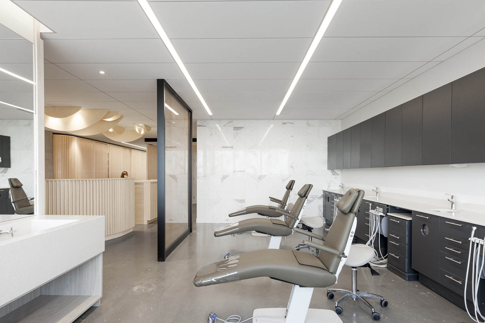
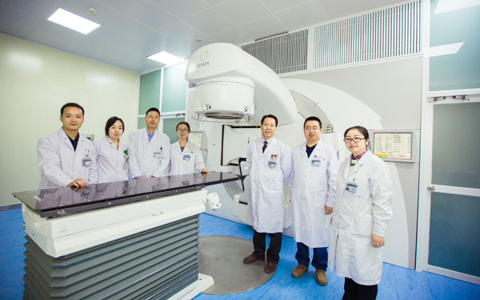
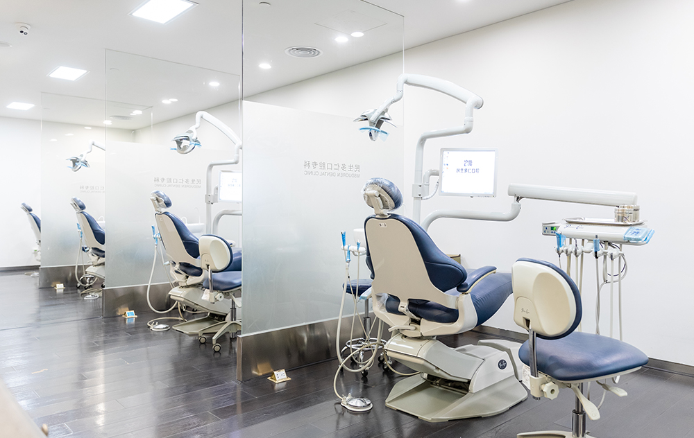
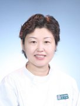
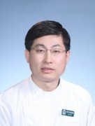
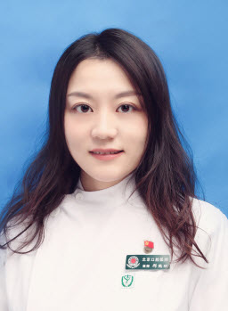

就医指南
-
报告查询
-
挂号预约
-
诊疗导航
-

医师值班时间查询
科室介绍
-

牙体牙髓科
科室具有先进的牙体牙髓根尖周疾病的诊疗技术，擅长牙体牙髓根尖周疾病各种常见病及疑难病例的诊治，聚焦显微根管治疗、根尖手术及牙体美学修复，开展多学科联合特色创新技术临床研究，建立牙体牙髓多发病及疑难病显微治疗临床路径，规范牙体牙髓病诊断和治疗流程，显著提高根管治疗术的质量和天然牙的保存率，接受全国范围疑难病例转诊，以高超的专业水准和国际化的先进治疗理念得到国内外同行的广泛认可。
科室拥有一支由35名医师组成的高水平医疗团队，主要毕业于首都医科大学、四川大学华西口腔医学院、北京大学口腔医学院、武汉大学口腔医学院、中山大学光华口腔医学院等国内顶级口腔院校，其中博士占比66%，硕士占比28%，高级职称医师占比54%。在全国性根管治疗比赛、美学比赛、教学比赛等大赛中多次斩获一、二等奖。 -

口腔正畸科
口腔正畸科是国家重点专科，2014年举行的国家重点临床专科正畸专业评选中获得全国第三名。正畸科拥有先进的技术和设备，目前共有椅位51台,正畸诊室17个,北京卫生重点学科实验室1个,正畸技术室1个,正畸教研室1个，口腔正畸会诊中心一个。
正畸科拥有丰富经验的临床医师52名,其中主任医师16名、副主任医师17名、主治医师14名、医师5名,其中具有博士学位者46人，硕士学位者6人，专业技术队伍年轻、人才梯队合理，每年均有多名医师出国进修和进行学术交流，并且聘请了多名国际知名的正畸专家学者为客座教授。
正畸科是教育部授权的临床医学博士及硕士学位授予单位，现有博士生导师5名、硕士生导师12名，已经培养超过百名口腔正畸高级专业人才，活跃在临床、教学与科研的第一线。口腔正畸科还是中华医学会口腔正畸专业委员会副主任委员所在单位,拥有雄厚的技术力量和先进的设备使我们能够为广大错牙合畸形患者提供优质的服务。 -

牙周科
牙周科是集临床、教学和科研于一体的专业科室。 主要开展急性和慢性牙龈炎、牙龈增生和各种类型的牙周炎的系统治疗。在完善的牙周基础治疗的基础上，开展各种牙周手术，包括牙龈切除术、牙周翻瓣术、牙冠延长术以及牙周组织再生术等，帮助患者解决牙周相关问题。
随着基础研究的发展和新技术的应用，牙周科采用了各种新的诊疗技术并开设了特色门诊：采用超声龈下刮治术和牙周“一站式”治疗，减轻牙周基础治疗的痛苦并缩短疗程;选择高强度粘接树脂或高弹纤维进行松牙固定术，提高患者的咀嚼功能;为改善患者的美观，开展了义龈的修复以及精细的膜龈手术。同时，我们最新引进了激光牙周治疗仪，牙周显微镜等国际先进仪器，为牙周病的治疗开辟新的途径。
技术力量雄厚的基础教研室为临床服务，可以进行微生物学检测，基因学检测，细胞学、免疫学检查，免疫病理学等基础研究;获3项国家级课题3项，及多项北京市级课题。有2人获得北京市新星计划资助。已在多种国内外核心期刊上发表50论著，并且有多项研究获市级获局级科研成果。 -
口腔修复科
修复科是医院主要临床科室之一，多年来为广大患者提供了优质的医疗服务。科内拥有一支高素质的医、护、技职工队伍，目前共有医护人员40名，其中正、副主任医师9名。科室除拥有43台进口综合治疗台外，还配备有静音无尘研磨刷光机、高压蒸汽清洗机以及器械消毒全套设备。
修复科在牙体缺损、牙列缺损、牙列缺失以及颌骨缺损的修复方面积累了丰富的临床经验。我科是国内最早开展烤瓷修复的单位之一，已有20余年的历史，在多个烤瓷冠和烤瓷长桥的修复方面积累了丰富的经验。经修复后的患牙外形逼真、美观耐用。除此之外，对于许多在一般诊所内无法保留的残根、残冠，经过我们的精心治疗后大都可以保存下来并得到妥善修复，不必拔除。
目前，修复科可根据患者的需要及口腔情况制作各类义齿，在可摘义齿方面主要有：胶连义齿、支架义齿(钴铬合金、金合金、钛合金)、覆盖义齿等。在固定义齿方面主要有：金属冠桥：可选用镍铬合金、金银钯合金、金合金。烤瓷冠桥：可选用镍铬合金烤瓷冠、金合金烤瓷冠、金沉积内冠烤瓷冠以及肩台瓷烤瓷冠、瓷沉积烤瓷冠、全瓷冠、碳纤维桩核等。在全口义齿方面：可选用合资或进口复层树脂牙，选用塑胶、钴铬合金基托或金合金、钛合金基托。
医师介绍
-

侯本祥
主任医师/牙体牙髓科 -

戴青
主任医师/牙周科 -

白玉兴
主任医师/口腔正畸科 -

邢鹤琳
副主任医师/口腔修复科 -
邢鹤琳
副主任医师/口腔修复科 -
邢鹤琳
副主任医师/口腔修复科 -
邢鹤琳
副主任医师/口腔修复科